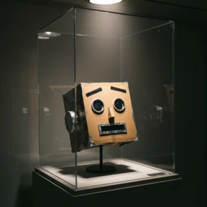
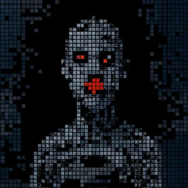
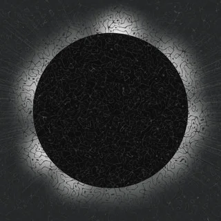

Ambient / downtempo
le vide
French vocal fragments leave room around the beat. Listen for the space between phrases on “Vie Vide,” then hear the remix with loserdub.
Listen on Spotify ↗Justin Ray records as le vide, Flawed Future and disarray in East Lansing. Their releases cross paths with loserdub and VISION in the Trust Node Logic catalog.

French vocal fragments leave room around the beat. Listen for the space between phrases on “Vie Vide,” then hear the remix with loserdub.
Listen on Spotify ↗
Distorted kicks and sharp drops drive this side of the catalog. “HARDER” is a solo cut. “Agency” brings loserdub into the mix.
Listen on Spotify ↗
Guitar takes the lead here. Start with “What Waits,” then follow the project across to “Latent State,” a shared single with loserdub.
Listen on Spotify ↗